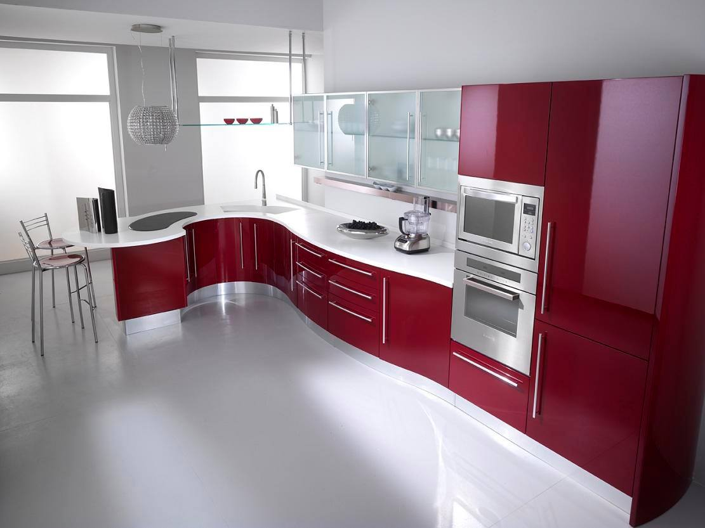

With over 28 years of hands-on experience in the construction industry,
Roelof Venter is the cornerstone of Roelof Ventures. Known for treating
each project as a monument, Roelof approaches construction with passion,
precision, and professionalism.
Kitchens and BICs: Boffi, Euro Casa, local suppliers, 3D rendering
Ownership
Every project has its own challenges — we treat each one as important.
Personnel and trades take ownership of the tasks at hand.
Execution is aligned to the project timeline with consideration for all trades.
We work together to create something unique every time.
Building Options
Project management within your budget: we plan, appoint competent contractors, monitor execution and deliver to completion at an agreed monthly fee.
Inclusive/exclusive professional-costs BOQ assessment with a transparent m² rate.
Roelof Venter
Kitchens and BIC’s
We use a range of suppliers and subcontractors, including Boffi, Euro Casa and competent local suppliers.
We collaborate with a rendering company for interior and exterior 3D design finishes.
Renderings help owners decide on the final aesthetic with confidence.

Boffi
Projects
Recent work in George, Wilderness, Sedgefield, Mossel Bay, Knysna and Oudtshoorn.
Values
We believe in full ownership of every project, open collaboration with all
stakeholders, execution that honours timelines, and delivering a unique
structure that reflects each client’s vision.